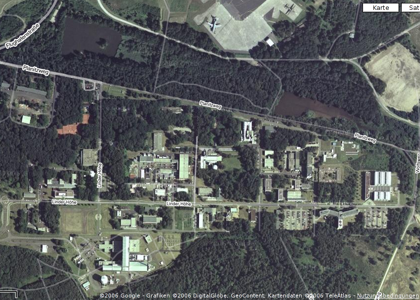

B.Sc. Jan Hinzmann
In Braunschweig arbeiten ungefähr 800 von insg. ca. 5.100 Mitarbeitern.
In Braunschweig und Köln-Porz befindet sich die Abteilung Simulations- und Softwaretechnik (SISTEC).
Mein Standort war Braunschweig:
Dienstantrittsreise nach Köln-Porz - Sitz des Vorstandes, Hauptverwaltung

Das DLR ist an diversen Softwareprojekten beteiligt. Hierbei kommen folgende Tools zum Einsatz:
Meine Hauptaufgabe:

Vorgehen:
Ergebnisse:
#viewvc loginfohandler
ALL /work/hinz_ja/install/viewvc/bin/loginfo-handler %{sVv}
#!/bin/sh # Jan Hinzmann 2006.04.26 # This script enables realtime updates to the commit database # for the viewvc query interface. VIEWVC="/work/hinz_ja/install/viewvc" REPOSITORY="$1" REVISION="$2" $VIEWVC/bin/svndbadmin rebuild "$REPOSITORY" "$REVISION"
<!-- header.ezt: query interface links -->
<div style="float:left; padding-left: 6px">
[if-any rootname]
<span style="background-color:#DDDDDD;
padding: 2px 4px 2px 4px;
margin: 1px">
<a href="/viewvc/?root=[rootname]&view=query&dir=&file=&
file_match=exact&who=&who_match=exact&querysort=date&
hours=2&date=month&mindate=&maxdate=&limit_changes=100">
Changelog for [rootname]
</a>
</span>
[else]
Mein Praktikum beim DLR hat viel Spaß gemacht und ich
habe eine Menge lernen können.
— Dankeschön —